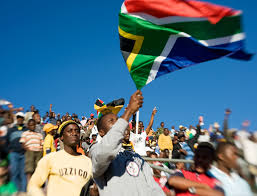
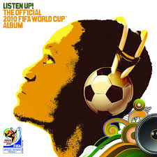
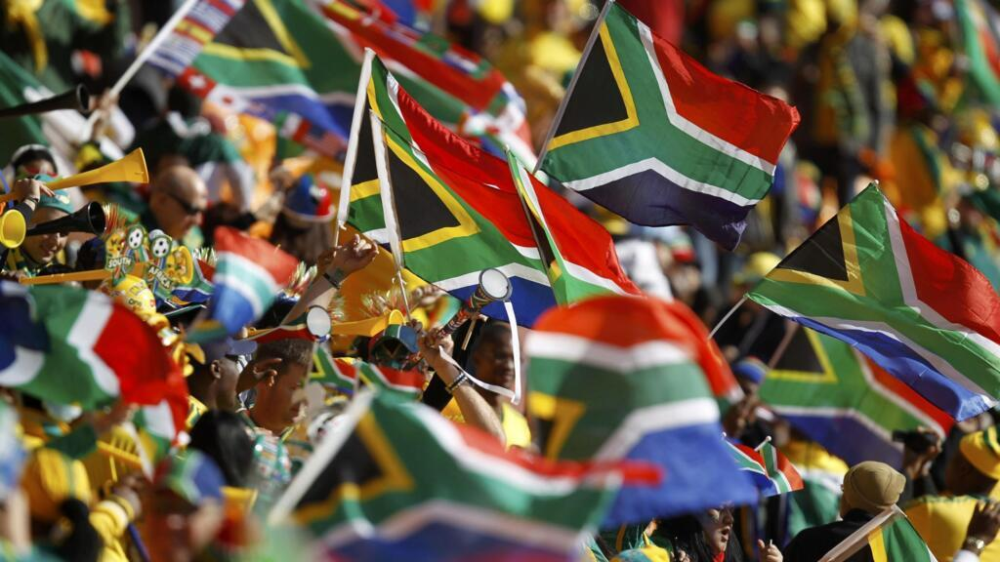
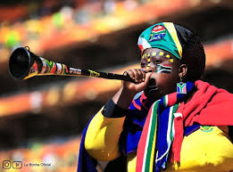
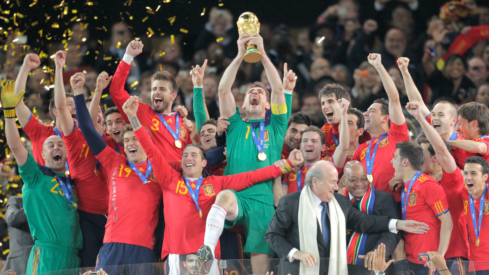
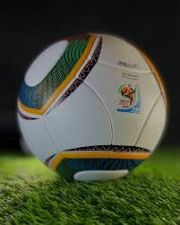

El Copa Mundial de la FIFA Sudáfrica 2010 fue un torneo muy especial, no solo por el fútbol sino también por todo lo cultural que lo rodeó.

Se celebró en Sudáfrica, siendo la primera vez que el continente africano organizaba el torneo. Esto lo convirtió en un símbolo de inclusión y reconocimiento global.

Hubo música, danzas tradicionales y una fuerte presencia de identidades locales. La ceremonia de apertura mostró ritmos africanos y artistas del continente. Canción oficial

El evento buscó promover la unidad, el respeto y el desarrollo en África, con el lema “Ke Nako” (es hora).

Estas trompetas largas se volvieron icónicas. Su sonido constante fue amado por algunos y odiado por otros 😅.

España ganó su primer Mundial al vencer a Países Bajos 1-0 en la final.

El balón llamado Adidas Jabulani fue criticado por jugadores por su comportamiento impredecible.